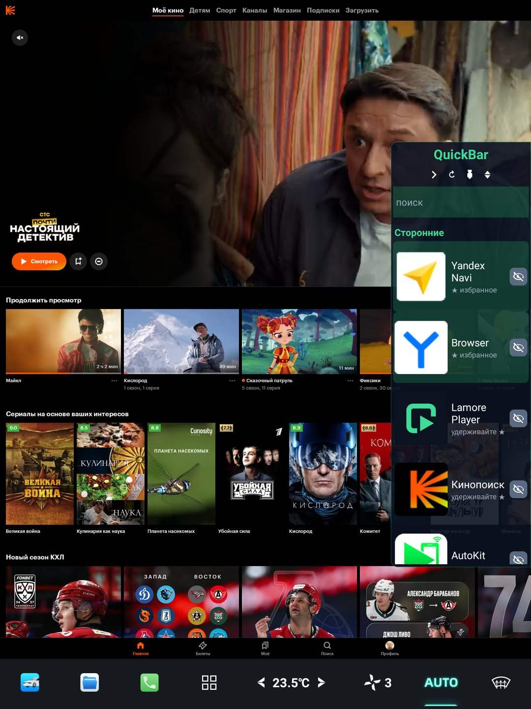
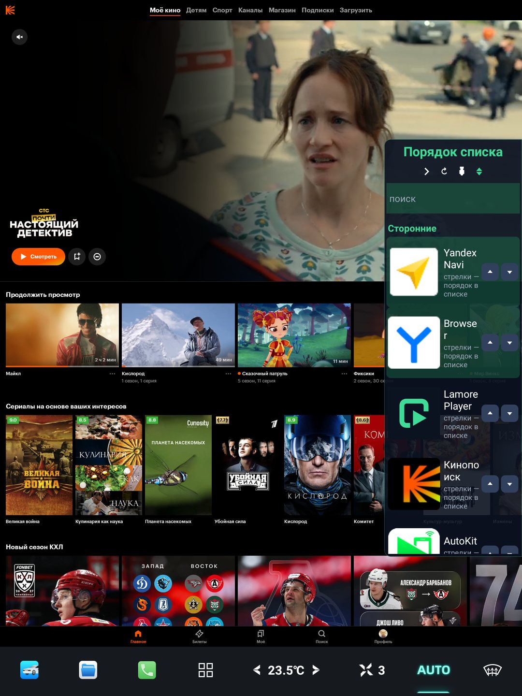
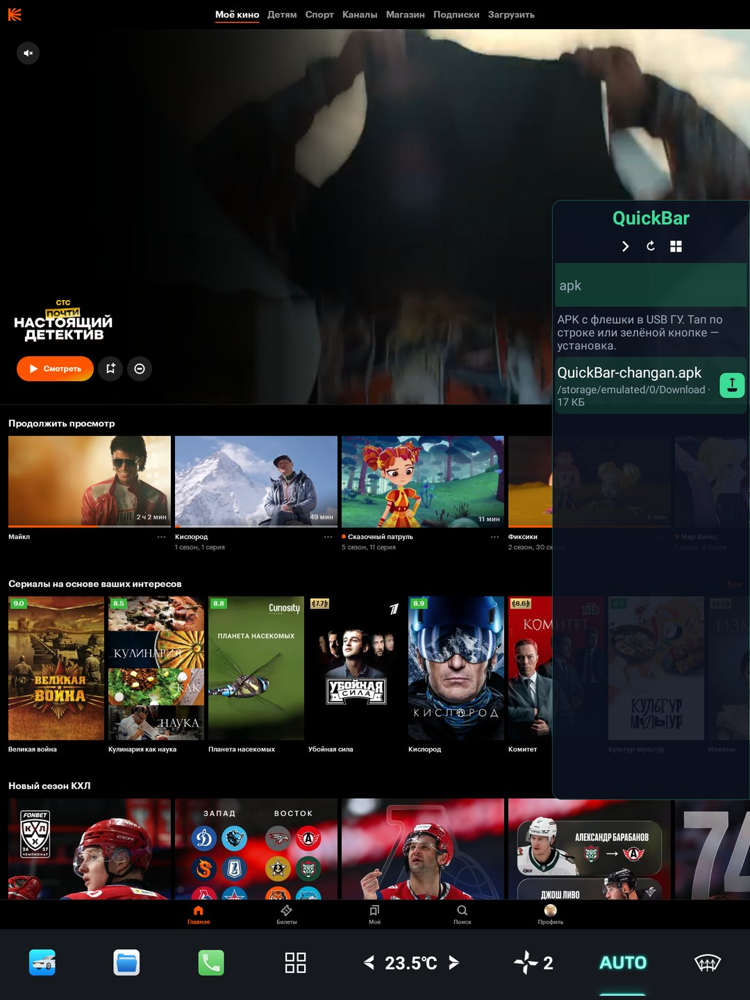
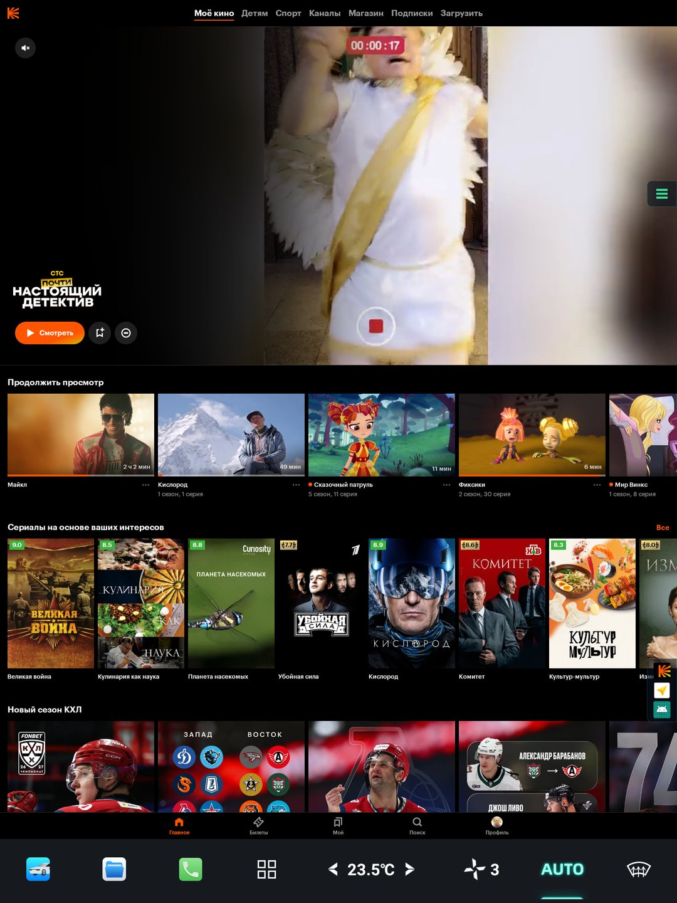

01
Мы ставим панель
Подключаемся к вашей Lamore, ставим QuickBar. Это единственный визит. Дальше машина работает без нас.
Changan Lamore 2023 · штатный экран
QuickBar живёт справа поверх всего: Яндекс, Telegram, Кинопоиск — в один тап. А новое ПО вы ставите сами, в машине: флешка или память ГУ, ключ подписывает, зелёная кнопка ставит. Ноутбук после установки панели больше не нужен.

Один раз ставим панель. Дальше вы — хозяин экрана. Скачали APK, вставили флешку или кинули файл в память ГУ — и поставили сами.
Подключаемся к вашей Lamore, ставим QuickBar. Это единственный визит. Дальше машина работает без нас.
Флешка в USB-разъёме ГУ — или файл уже в памяти головного. На экране две кнопки: USB и Память ГУ.
Серый ключ подписывает приложение под вашу ГУ. Штатная система пускает его внутрь. Без ноутбука, без «сертификата разработчика».
Тап — и приложение на экране. Сколько угодно раз. Навигатор, кино, мессенджер — когда захотите, не когда свободен сервис.
Скачали дома, кинули на флешку, вставили в разъём ГУ. Панель видит файлы, вы подписываете и ставите не выходя из салона.
Файл уже лежит в Download на головном? Переключили источник на «Память ГУ» — тот же ключ, та же установка. Флешка не обязательна.
Не подписка. Не «ещё одно приложение — ещё один счёт». Один платёж — и ставите сами.
Один раз. Дальше нужные приложения ставите сами — сколько угодно, когда угодно.
Подключаемся к ГУ, ставим QuickBar. После этого любое приложение вы ставите сами: выбрали USB или память ГУ, ключ подписал, зелёная поставила.
Повторные визиты и плата «за каждое новое» не нужны. Абонентки нет.
Хочу на свою LamoreЖивые кадры с экрана Lamore. Кинопоиск остаётся, панель — узкая полоса справа.



Макет интерфейса. Нажмите «Системные» или «Скрытые» — в машине они так же закрыты, пока не откроете.
Большой экран жалко отдавать одному навигатору. И жалко прятать навигатор ради чата. И ещё жалко ехать в сервис каждый раз, когда вышло новое приложение.
Панель узкая, справа. Дорога, стрелка, пробки — на месте, пока открываете мессенджер.
Флешка или память ГУ. Ключ подписывает под машину. Зелёная ставит. Без ноутбука и без поездки.
Что ездит с вами каждый день — наверху. Удержали палец — в избранное. Лишнее спрятали.
Выключили зажигание, завели снова. QuickBar поднимается сам, без лишних окон поверх карты.
Иконки и подписи читаются с водительского кресла. Не прищуривайтесь на мелкое меню.
Только Changan Lamore 2023. Сделано владельцем Lamore — под своё удобство, не «универсальная магнитола».
Перезвоним, согласуем время. Установка 5 000 ₽ — один раз. Дальше приложения — ваши.
Заявка падает в таблицу ИТ-Мастерской. Звоним, ставим панель на вашу Lamore. После этого приложения добавляете сами — с флешки или из памяти ГУ.
5 000 ₽ — установка. Абонентки нет. «Ещё одно приложение» больше не стоит денег.